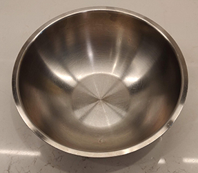
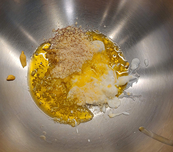
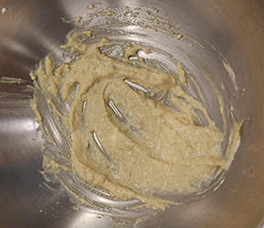
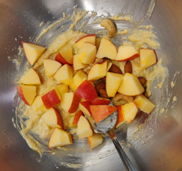
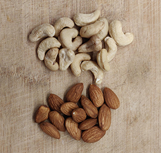
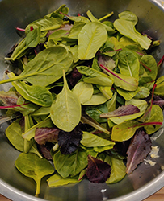
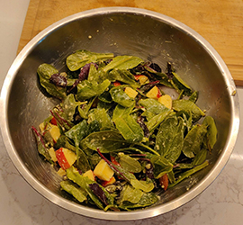

Mix Green Salad

Ingredients
- Baby Mix Greens
- Romaine lettuce
- Swiss Chard
- Arugula
- Muzuna
- Radicchio
- Spinach
- Dijon Mustard 1 Tsp
- Hung Curd 1 Tsp
- Grated Parmesan 1 Tbsp
- Olive Oil 1 Tbsp
- Black Salt (as per taste)
- 1 Apple
- Almonds
- Cashews
Method
- Step 1: Take a big mixing bowl and add dijon mustard, hung curd, grated parmesan, oliv oil and black salt to it. Mix it till all combine well.

- Step 2: Cut an apple into bite size cubes and add to the bowl.

- Step 3: Take some almonds and cashews and add to the bowl. You can also chop those to make smaller bits of it.

- Step 4: Finally add the washed and dried baby greens to the bowl and mix all together, till all the leaves are covered with wet mix.

You are ready to enjoy this easy and healthy recipe.

Thank You!